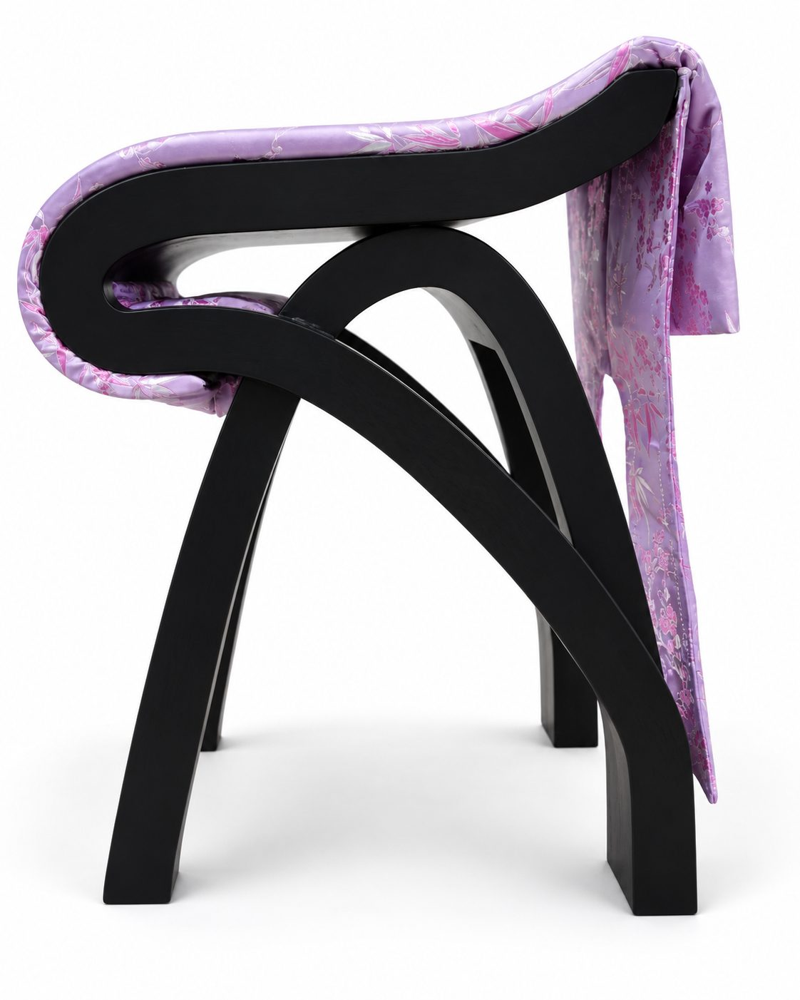
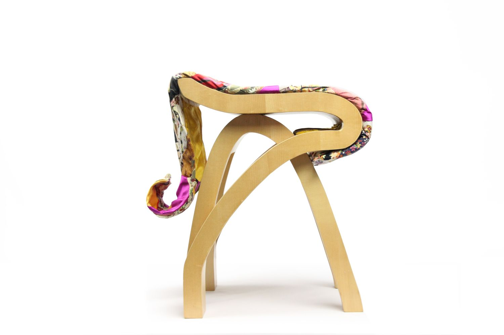
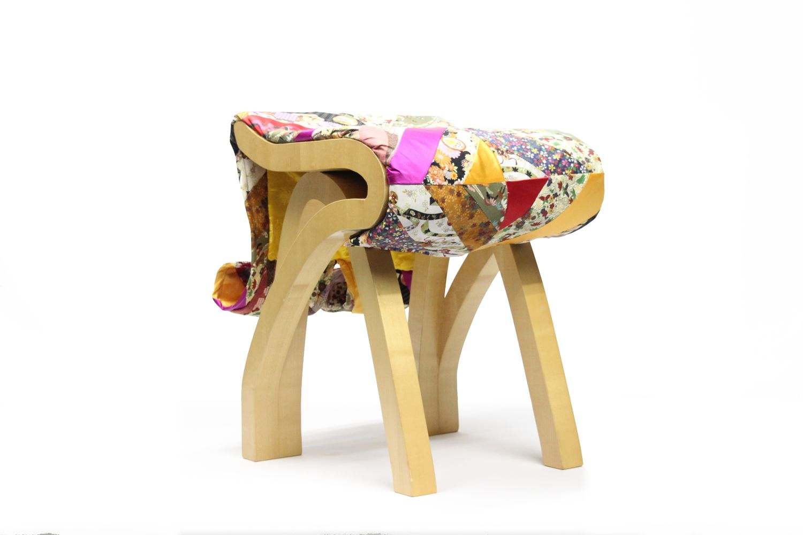
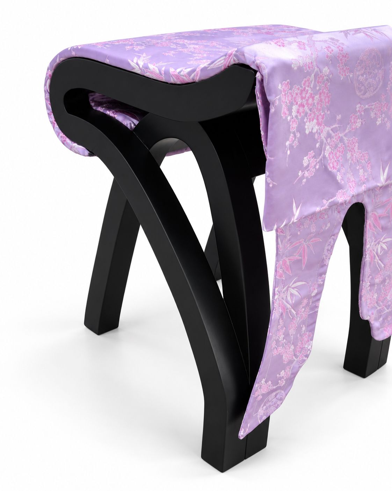
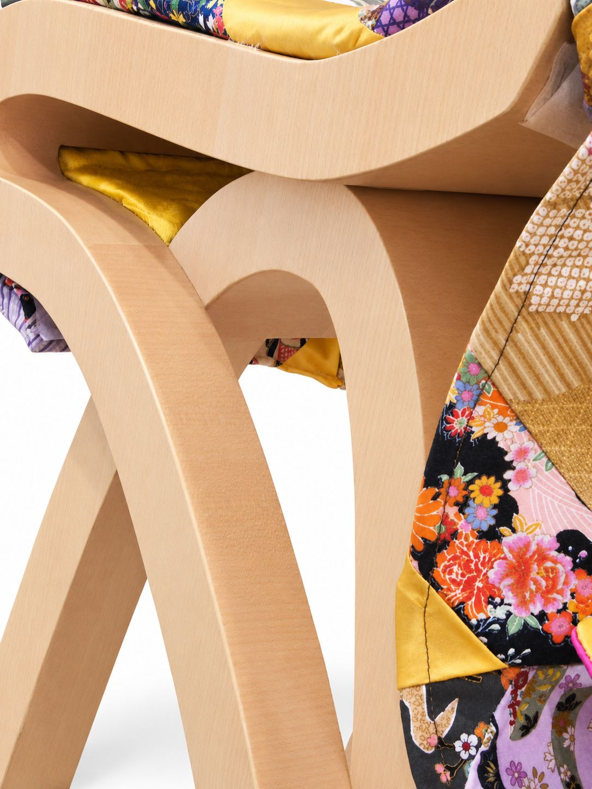

WORK 27 / 29
Nobu Stool
Curved timber, tradition and contemporary form.
Year2007
MaterialsTimber and fabric
StageLimited edition

DESIGN STORY
Nobu Stool takes inspiration from the historical figure Nobunaga and the balance between tradition and experimentation. Curved timber gives the seat a fluid, continuous character, allowing material and silhouette to lead the design. The stool combines a Japanese-inspired sensibility with a direct, contemporary expression.
SELECTED PRESENTATIONS
- 2007SaloneSatellite · Rho, Milan



